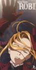

Witch Hunter Robin
List contains: 26 items, 0.4 hours.
Seasons: 1 |
Seasons: 1 |
Stephen Klancher
...has seen 1
...has seen 0 hours
...has not seen 0.4 hours

Timeline
Most Recent:
Replacement
First Unseen:
Addicted to Power (# 2)
...has seen 1
...has seen 0 hours
...has not seen 0.4 hours
Timeline
Most Recent:
Replacement
First Unseen:
Addicted to Power (# 2)
